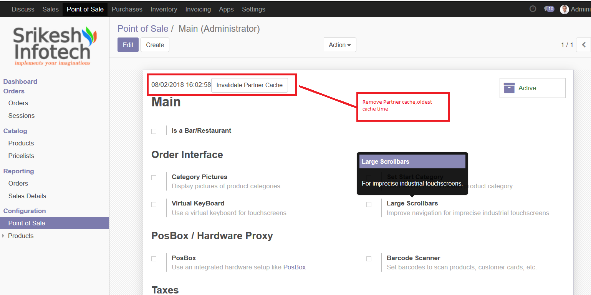

This creates a partners cache per POS config.
It drastically lowers the time it takes to load a POS session with a lot of partners.
Benefit of the module:
The original Odoo POS is very slow if you have a large number of Partner, which is very time-consuming and idle.
By this module, your system will benefit from incredible loading speed of 100,000 - 200,000 partner in a few seconds even in low internet connection.
Key features:
Loading more 100,000 partner on 2 - 3 seconds.
Not load background, keep POS work Offline after first loading.
Immediately synchronize changes without reload.
If any changes in back end such as partner(create, delete, edit ). Auto sync to POS, no need reload pos sessions (supported POS session online and offline mode)
Only start pos sessions with in some millions datas only need 20 30 seconds.
Adaptable with large number of records.
Applicable to any Models.
No xls, no json cache, no schedule auto update.
No configurations.
Only one times installing pos datas and use any where, any times, any devices.
Partner Cache Configuration
This module installed, your system will benefit from incredible loading speed of huge customers in a few seconds.

Synchronization
Indicator increases whenever change the partner datails.
Click to Indicator to synchronize pos partner data without reload in POS.